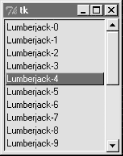
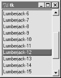
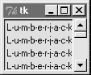

| I l@ve RuBoard |
|
8.3 Listboxes and ScrollbarsListbox widgets allow you to display a list of items for selection, and Scrollbarsare designed for navigating through the contents of other widgets. Because it is common to use these widgets together, let's study them both at once. Example 8-9 builds both a Listbox and a Scrollbar, as a packaged set. Example 8-9. PP2E\Gui\Tour\scrolledlist.pyfrom Tkinter import *
class ScrolledList(Frame):
def __init__(self, options, parent=None):
Frame.__init__(self, parent)
self.pack(expand=YES, fill=BOTH) # make me expandable
self.makeWidgets(options)
def handleList(self, event):
index = self.listbox.curselection() # on list double-click
label = self.listbox.get(index) # fetch selection text
self.runCommand(label) # and call action here
def makeWidgets(self, options): # or get(ACTIVE)
sbar = Scrollbar(self)
list = Listbox(self, relief=SUNKEN)
sbar.config(command=list.yview) # xlink sbar and list
list.config(yscrollcommand=sbar.set) # move one moves other
sbar.pack(side=RIGHT, fill=Y) # pack first=clip last
list.pack(side=LEFT, expand=YES, fill=BOTH) # list clipped first
pos = 0
for label in options: # add to list-box
list.insert(pos, label) # or insert(END,label)
pos = pos + 1
#list.config(selectmode=SINGLE, setgrid=1) # select,resize modes
list.bind('<Double-1>', self.handleList) # set event handler
self.listbox = list
def runCommand(self, selection): # redefine me lower
print 'You selected:', selection
if __name__ == '__main__':
options = map((lambda x: 'Lumberjack-' + str(x)), range(20))
ScrolledList(options).mainloop()
This module can be run standalone to experiment with these widgets, but is also designed to be useful as a library object. By passing in different selection lists to the options argument and redefining the runCommand method in a subclass, the ScrolledList component class defined here can be reused any time you need to display a scrollable list. With just a little forethought, it's easy to extend the Tkinter library with Python classes. When run standalone, this script generates the window shown in Figure 8-12. It's a Frame, with a Listbox on its left containing 20 generated entries (the fifth has been clicked), along with an associated Scrollbar on its right for moving through the list. If you move the scroll, the list moves, and vice versa. Figure 8-12. scrolledlist at the top8.3.1 Programming ListboxesListboxes are straightforward to use, but they are populated and processed in somewhat unique ways compared to the widgets we've seen so far. Many listbox calls accept a passed-in index to refer to an entry in the list. Indexes start at integer and grow higher, but Tkinter also accepts special name strings in place of integer offsets -- "end" to refer to the end of the list, "active" to denote the line selected, and more. This generally yields more than one way to code listbox calls. For instance, this script adds items to the listbox in this window by calling its insert method, with successive offsets (starting at zero): list.insert(pos, label) pos = pos + 1 But you can also fill a list by simply adding items at the end without keeping a position counter at all, with either of these statements: list.insert('end', label) # add at end: no need to count positions
list.insert(END, label) # END is preset to 'end' inside Tkinter
The listbox widget doesn't have anything like the command option we use to register callback handlers for button presses, so you either need to fetch listbox selections while processing other widgets' events (e.g., a button press elsewhere in the GUI), or tap into other event protocols to process user selections. To fetch a selected value, this script binds the <Double-1> left mouse button double-click event to a callback handler method with bind (seen earlier on this tour). In the double-click handler, this script grabs the selected item out of the listbox with this pair of listbox method calls: index = self.listbox.curselection() # get selection index label = self.listbox.get(index) # fetch text by its index Here, too, you can code this differently. Either of the following lines have the same effect; they get the contents of the line at index "active" -- the one selected: label = self.listbox.get('active') # fetch from active index
label = self.listbox.get(ACTIVE) # ACTIVE='active' in Tkinter
For illustration purposes, the class's default runCommand method prints the value selected each time you double-click an entry in the list -- as fetched by this script, it comes back as a string reflecting the text in the selected entry: C:\...\PP2E\Gui\Tour>python scrolledlist.py You selected: Lumberjack-2 You selected: Lumberjack-19 You selected: Lumberjack-4 You selected: Lumberjack-12 8.3.2 Programming ScrollbarsThe deepest magic in this script, though, boils down to two lines of code: sbar.config(command=list.yview) # call list.yview when I move list.config(yscrollcommand=sbar.set) # call sbar.set when I move The scrollbar and listbox are effectively cross-linked to each other through these configuration options; their values simply refer to bound widget methods of the other. By linking like this, Tkinter automatically keeps the two widgets in sync with each other as they move. Here's how this works:
In other words, moving one automatically moves the other. It turns out that every scrollable object in Tkinter -- Listbox, Entry, Text, and Canvas -- has built-in yview and xview methods to process incoming vertical and horizontal scroll callbacks, as well as yscrollcommand and xscrollcommand options for specifying an associated scrollbar's callback handler. Scrollbars all have a command option, to name a handler to call on moves. Internally, Tkinter passes information to all these methods that specifies their new position (e.g., "go 10% down from the top"), but your scripts need never deal with that level of detail. Because the scrollbar and listbox have been cross-linked in their option settings, moving the scrollbar automatically moves the list, and moving the list automatically moves the scrollbar. To move the scrollbar, either drag the solid part or click on its arrows or empty areas. To move the list, click on the list and move the mouse pointer above or below the listbox without releasing the mouse button. In both cases, the list and scrollbar move in unison. Figure 8-13 is the scene after moving down a few entries in the list, one way or another. Figure 8-13. scrolledlist in the middle8.3.3 Packing ScrollbarsFinally, remember that widgets packed last are always clipped first when a window is shrunk. Because of that, it's important to pack scrollbars in a display as soon as possible, so that they are the last to go when the window becomes too small for everything. You can generally make due with less than complete listbox text, but the scrollbar is crucial for navigating through the list. As Figure 8-14 shows, shrinking this script's window cuts out part of the list, but retains the scrollbar. Figure 8-14. scrolledlist gets smallAt the same time, you don't generally want a scrollbar to expand with a window, so be sure to pack it with just a fill=Y (or fill=X for a horizontal scroll), and not an expand=YES. Expanding this example's window, for instance, makes the listbox grow along with the window, but keeps the scrollbar attached to the right, and of the same size. We'll see both scrollbars and listboxes repeatedly in later examples in this and later chapters (flip ahead to PyEdit, PyForm, PyTree, and ShellGui for more examples). And although the example script in this section captures the fundamentals, I should point out that there is more to both scrollbars and listboxes than meets the eye here. For example, it's just as easy to add horizontal scrollbars to scrollable widgets; they are programmed almost exactly like the vertical one implemented here, but callback handler names start with "x", not "y", and an orient='horizontal' configuration option is set for the scrollbar object (see the later PyEdit and PyTree programs for examples). Listboxes can also be useful input devices even without attached scrollbars; they also accept color, font, and relief configuration options, and support multiple selections (the default is selectmode=SINGLE). Scrollbars see more kinds of GUI action too -- they can be associated with other kinds of widgets in the Tkinter library. For instance, it is common to attach one to the Text widget; which brings us to the next point of interest on this tour. |
| I l@ve RuBoard |
|